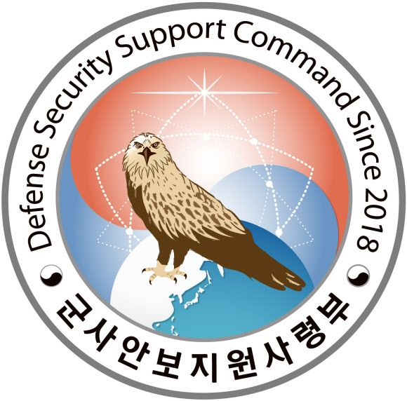
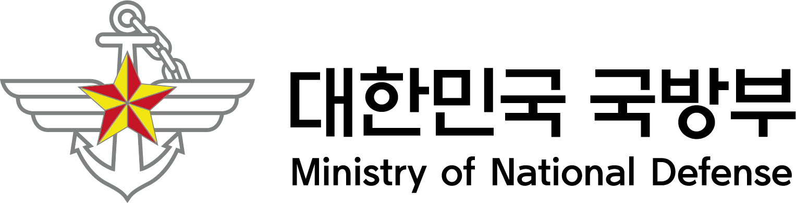
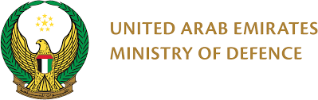

Dual-Use & Strategic Technology
Defining and measuring technological duality at the patent level, with attention to sensitivity, controllability, and policy relevance.
My research examines the intersection of technology and security. It focuses on how dual-use technologies are defined, measured, and governed, as well as how export-control regimes and geopolitical relations shape their development and diffusion.
Combining patent and citation data with computational text analysis, embedding-based retrieval, and LLM-assisted classification, I analyze these processes across patents, firms, and countries—from defense-industry innovation to cross-national knowledge flows.
My doctoral research links multilateral export-control lists with patent data to identify the sensitivity and controllability of dual-use and strategic technologies, and examines cross-border knowledge flows under geopolitical constraints.
Technology–Security Nexus
Dual-Use & Strategic Technology
Export Controls
Patent & Citation Analysis
Computational Text Analysis
East Asia
Middle East
United States
Defining and measuring technological duality at the patent level, with attention to sensitivity, controllability, and policy relevance.
Examining how multilateral control regimes and national policies shape the development and diffusion of strategic technologies.
Tracing how geopolitical relations redirect knowledge across patents, firms, countries, and defense-industrial supply networks.
Methods: Patent and citation data; computational text analysis; embedding retrieval; LLM-assisted classification.
Researcher · Future Space Research Center, Ministry of Science and ICT · May 2022–Dec 2026
Analyzes space-policy trends and technological competition among major countries through the lens of techno-nationalism, and explores the implications of satellite navigation and satellite technologies for global sustainable development from the perspective of international technology cooperation. The project also supports the development of interdisciplinary technology-policy specialists through collaboration among participating universities.
Research consortium: Sejong University (lead), KAIST, Seoul National University, Yonsei University, and Hongik University.
Researcher · KAIST–Ministry of Foreign Affairs, 2023
Analyzed the security implications of AI, quantum, biotechnology, and nanotechnology and compared policy approaches in the United States, European Union, and China. The project proposed risk-based, multi-level governance linking domestic regulation with bilateral and multilateral cooperation, and contributed to policy-report preparation and expert sessions on responsible AI, cybersecurity, and emerging-security governance.
Military Security Office, Defense Counterintelligence Command
Security Policy Division, Defense Security Support Group
Develop national defense security laws, regulations, and institutional frameworks; oversee security management for classified defense programs; and formulate ROK–U.S. information-sharing guidance and defense AI and data-security policy. Conduct long-term defense security policy planning and analyze policy vulnerabilities and implementation practices.
ROK Military Training Cooperation Group in the UAE (Akh Unit)
Directed unit-wide security and counterintelligence; coordinated with the UAE military, information-security institutions, and defense companies; and assessed security risks associated with overseas defense programs and information exchange.

Defense Industry Security Office, Defense Security Support Command
Analyzed security and counterintelligence risks throughout the lifecycle of C4I and firepower weapon systems—from requirements development through operations and sustainment—and coordinated the protection of defense technology, test data, supply chains, and contractor networks with relevant agencies.


Minister of National Defense, Republic of Korea
Commander, UAE Special Operations Command
Recognized for leading security and counterintelligence during deployment to the UAE, strengthening coordination between Korean and Emirati institutions, supporting secure bilateral defense cooperation, and contributing to the safe and stable execution of the overseas mission.
Moonyul Yang & Seokkyun Joshua Woo · 3rd Sci-Sci Korea Workshop, Yonsei University · Sep 2026
Transforms five multilateral export-control systems into 2,619 technical decision units and links them to 8.2 million U.S. patents through semantic retrieval and LLM-assisted claim-level adjudication. The results show that fully matched patents occupy a narrower technological space, are more concentrated among assignees, and involve less international co-invention than partial or unmatched candidates.
Atlanta Conference on Science and Innovation Policy, Georgia Tech, 2023 
Best Early Career Poster Award—Honorable Mention
Presenter · 2023 Winter Academic Conference, Korean Defense Space Association · Dec 2023
Presenter · The 1st Space Conference, 2023
Behind Science, Issue 15, 2023
KAIST · Advisor: Seokkyun Joshua Woo
KAIST · Advisor: Soyoung Kim
Korea Military Academy